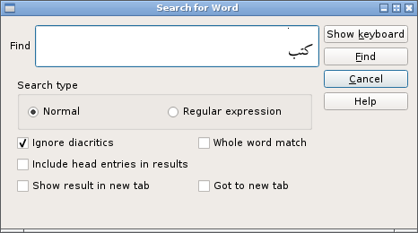
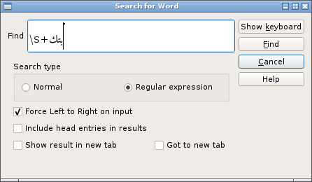

Searching
Searching for Arabic text can be restricted to specific contexts by choosing the appropriate method:
Ctrl+S,R Search for root Ctrl+S,E Search for headword Ctrl+S,W search for Arabic word in the body of the text
Searching for a root is the simplest (and fastest) search. When searching for a headword or an Arabic word in the body of the text more options are available.
There is no method of searching the entire Lexicon for an English word, although you can search the currently displayed root and all its entries for either English or Arabic text.
Details on how to enter Arabic text are here
There are two types of search:'normal' and 'regular expression' with slightly differing options.
Normal search
For a normal search the entered pattern is treated as literal text.

Ignore diacritics
When checked any diacritics will be ignored. What counts as a diacritic can be set here.
The default diacritics are: ً ٱ ٌ ٍ َ ُ ِ ّ ْ ٰ
Whole word match
The match is successful only when the target is a whole word; patterns embedded within a word do not match. For example, when this option is set searching for كتب will not match كتبنا .
Regular Expression search
The pattern will be treated as a regular expression.

Force LTR
Mixing Arabic text and regular expression syntax can be very confusing as the regex constructs e.g. \b (bare word) and \s (space) will change the text direction. With this option set, Arabic text will be displayed left-to-right. (To achieve this the Unicode code point 0x202d (LEFT-TO-RIGHT OVERRIDE) is prepended to the text. It is possible to accidentally remove this character through backspacing. If this happens, unchecking then checking the option will re-insert it.)
Include head entries in search results
When set, any head word that matches the pattern are included.
Search the currently viewed entry
Ctrl+F Search current